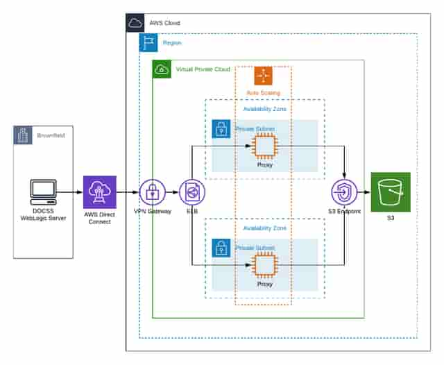
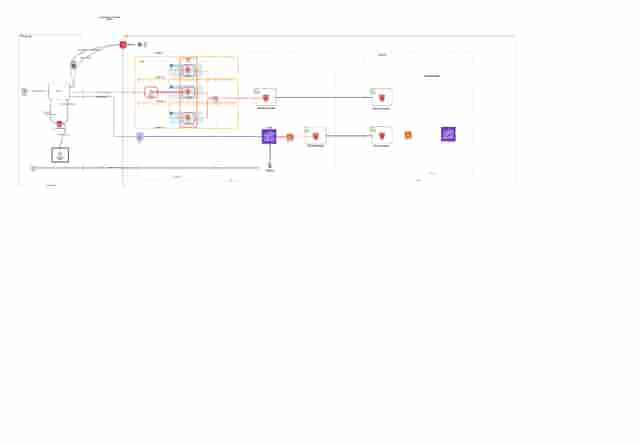
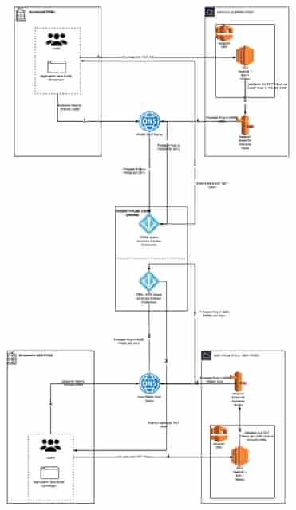
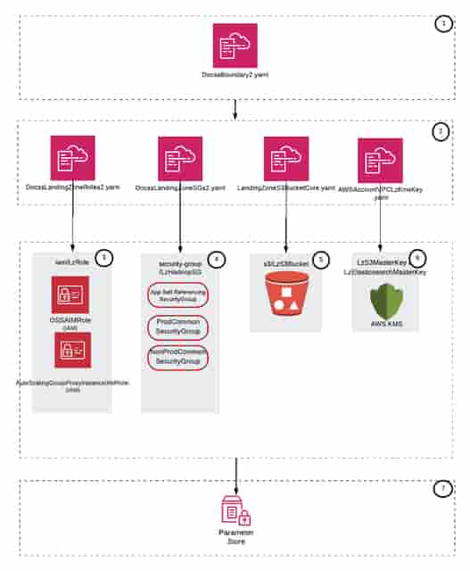

THE PROBLEM
Cloud automation, identity & recovery
A legacy application had to reach cloud storage and search while continuing to work with enterprise identity and private connectivity. A successful architecture needed consistent infrastructure across environments, controlled credentials, predictable application paths and a recoverable second-region footprint.
What I owned
I designed and productionized cloud infrastructure for a document and search platform, including proxy access, federated authentication, reusable IaC and hybrid-cloud disaster recovery. The work joined application requirements with security and operational constraints.
- Designed proxy, load-balancing and autoscaling infrastructure supporting the document platform's move to AWS.
- Developed reusable Terraform, CloudFormation and Ansible provisioning/landing-zone workflows covering compute, search, networking, IAM, secrets, encryption and cross-region storage.
- Designed federated authentication using PingFederate, Vault, AWS IAM/STS, ADFS and SAML across four environments; partnered with InfoSec on on-premises-to-S3 connectivity.
- Built and productionized a hybrid-cloud DR environment using cross-region replication, S3, Airflow, Python and Elasticsearch/ELK, delivered within six months.
SYSTEM DESIGN
Follow the architecture.
- 01
Connect applications privately
The proxy-farm drawing places application access behind hybrid connectivity and a load balancer, with autoscaled proxies in private subnets and an S3 endpoint.
- 02
Federate identity
The later authentication drawing shows a SAML assertion exchanged with IAM/STS for temporary credentials. The earlier state uses Kerberos, directory authentication and DNS forwarding to Hadoop services; those are distinct stages of the platform's evolution.
- 03
Provision dependencies consistently
The landing-zone drawing composes roles, security groups, object storage and KMS resources under an infrastructure boundary, with configuration references in Parameter Store.
- 04
Prepare for regional recovery
The recovery drawing separates primary data/search from replicated data and backup artifacts in another region, with restore/on-demand infrastructure. My operating work connected these components to recovery automation.
ENGINEERING JUDGMENT
The decisions behind the boxes.
Bridge the legacy application boundary
The proxy tier provides an integration point between the existing application and cloud services. The design also spreads proxies across availability zones and uses autoscaling.
Treat identity as architecture
Directory integration, federation and temporary AWS credentials influence how applications reach the data plane. They were designed alongside network paths, not added as an afterthought.
Make recovery and IaC reinforce each other
Reusable provisioning defines the target resources; backup/replication provides recoverable state. The architecture distinguishes those responsibilities, including an on-demand recovery footprint.
DELIVERY & OPERATIONS
What changed.
- Productionized hybrid-cloud DR with approximately 15-minute RPO and 2-hour RTO, delivered within six months.
- Designed federated authentication across four environments and reusable infrastructure automation for cloud platform services.
- Supported a mission-critical document/search platform through migration, operations and infrastructure performance testing.
The operating story
The useful interview story is the join between teams and systems: coordinating security requirements, application behavior, infrastructure dependencies and recovery procedures. I can walk from an application request through the proxy and identity paths, then explain how the same platform is provisioned and restored.
SUPPORTING VIEWS
Go one level deeper.
Private proxy access
Hybrid connectivity, load balancing, private-subnet proxies and S3 endpoint access.
Identity evolution
Legacy directory authentication and later SAML/STS federation shown as separate paths.
Infrastructure dependency model
Reusable infrastructure boundary composing identity, networking, storage, encryption and configuration.
ORIGINAL DIAGRAMS
A glimpse of the original diagrams.

LOW-RESOLUTION PORTFOLIO PREVIEWAWS proxy farm
Private application access through hybrid connectivity, load balancing and autoscaled proxy instances.

LOW-RESOLUTION PORTFOLIO PREVIEWRelease 2 network, authentication and recovery
Federation, cloud data access and cross-region recovery shown in the supplied release drawing.

LOW-RESOLUTION PORTFOLIO PREVIEWLegacy authentication architecture
The earlier directory, Kerberos and DNS dependencies, kept separate from the later federation design.

LOW-RESOLUTION PORTFOLIO PREVIEWLanding-zone infrastructure automation
Infrastructure dependencies for roles, security groups, storage, encryption and configuration.
LET’S GO DEEPER
Good starting points for a conversation.
- Why was the proxy tier useful during the migration?
- How did federation change the credential flow?
- How did infrastructure automation support disaster recovery?
Scope and attribution. Drawings represent different releases and environments; the portfolio shows their relationship without implying that every identity mechanism runs in the same request path. Recovery metrics are career-reported results for the described DR environment, not a universal service guarantee.
Next case studyEnterprise GenAI platform →